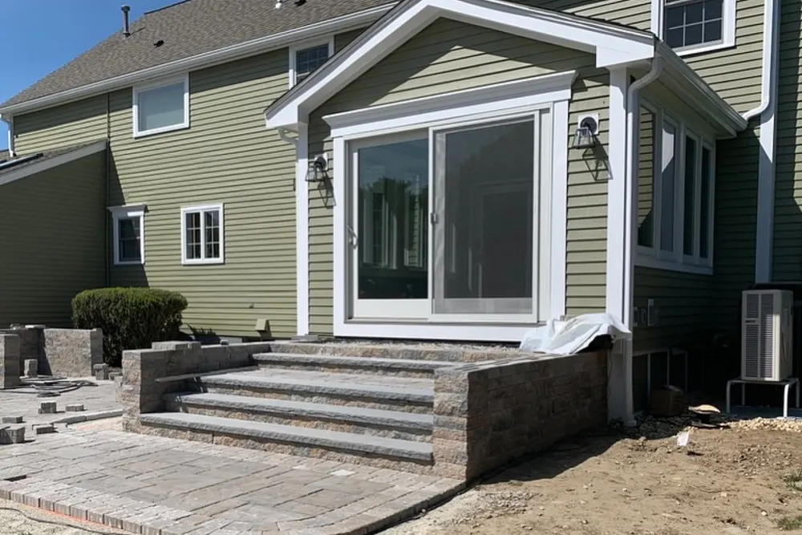
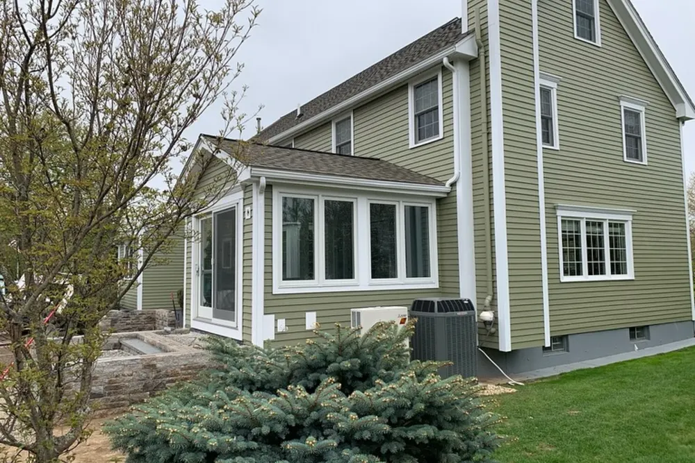
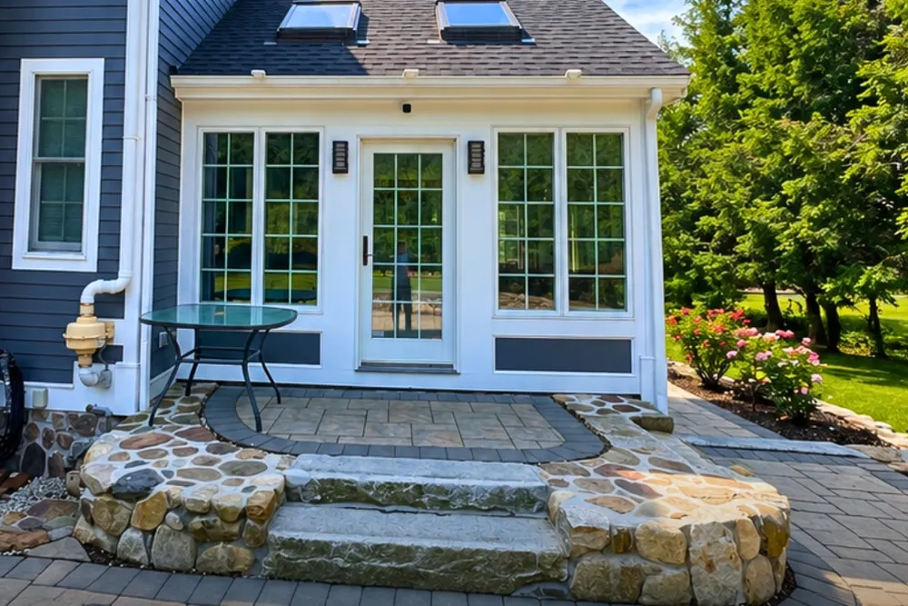
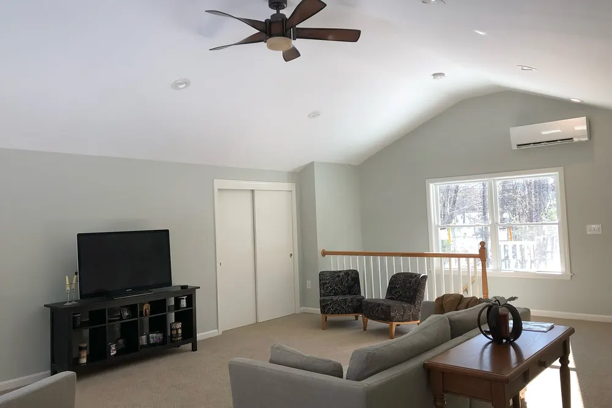
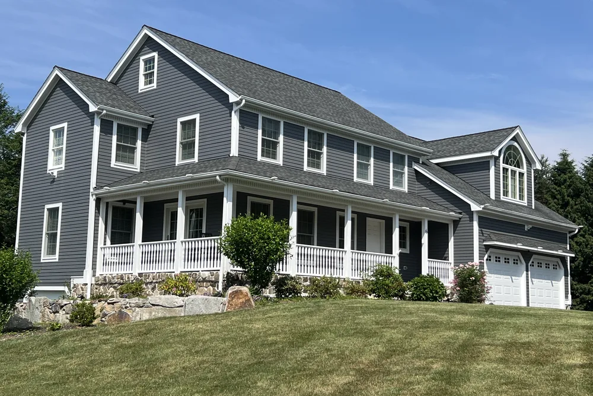
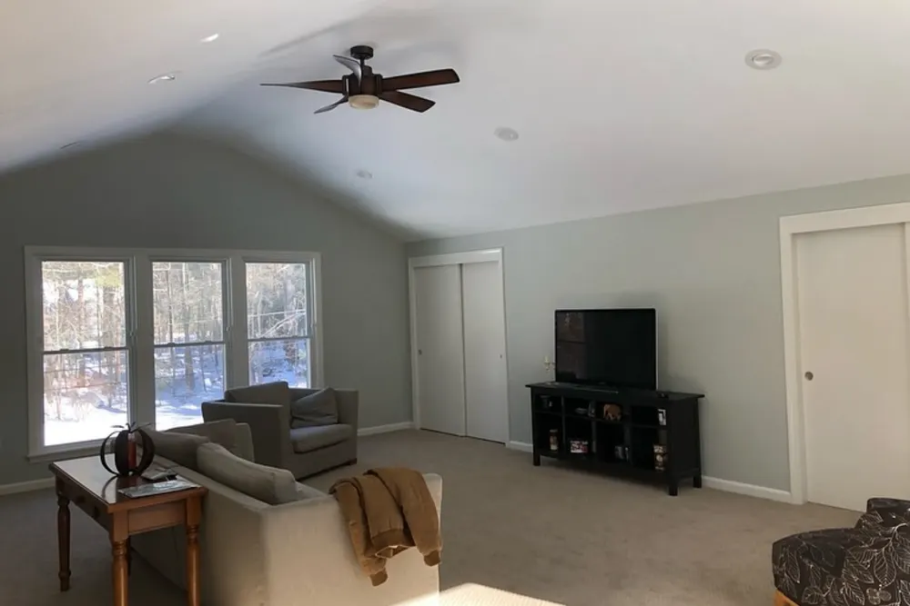
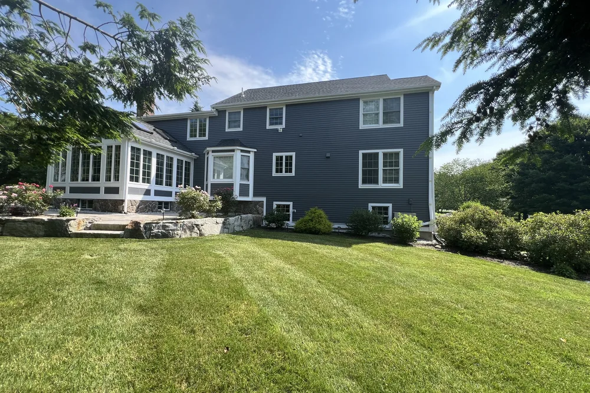
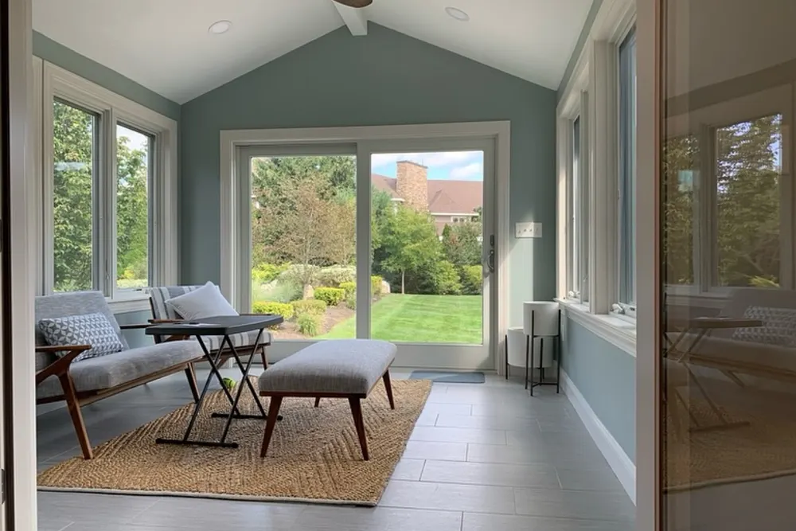

Tewksbury, MA home additions
Tewksbury home addition contractor for capes, ranches and colonials
Tewksbury home addition projects from DeFaria Construction add second stories, rooms over the garage, ADUs and primary suites to Tewksbury, Massachusetts homes, with structure and zoning checked before design.
Our work
New living space, built by our crew
A real DeFaria project: framing, built-ins and the finished room. Planning a project in Tewksbury? Start with a free estimate.
Get a Free Estimate
Local search focus
Tewksbury home additions start with how the new space meets the old.

Across Tewksbury Center, North Tewksbury, South Tewksbury and Indian Ridge, Tewksbury pairs older colonial-era and farm homes near the center with mid-century capes, ranches and newer colonial subdivisions. A Tewksbury addition has to match the roofline, siding and structure of the existing home, so it reads as part of the house, not a box bolted on.
This page is built for Tewksbury homeowners comparing home addition contractors near them. It connects the Tewksbury search to project photos, neighborhoods, the full addition scope and a direct estimate path.
- Clear estimate conversations before the project starts.
- Direct communication with the homeowner from walkthrough to final walkthrough.
- Local coverage across Tewksbury and the wider Middlesex County area.
Addition types in Tewksbury
Which home addition fits a Tewksbury cape, ranch or colonial?

Tewksbury homes fall into a few clear groups: colonial-era and farm homes near Tewksbury Center, mid-century capes and ranches across North and South Tewksbury, and newer colonial subdivisions around neighborhoods like Indian Ridge. Each points to a different kind of addition.
A ranch often gains the most from a second story or a rear primary suite, but the existing foundation and walls have to be checked to carry the new load. A cape usually grows with a full or partial dormer that turns cramped upstairs rooms into real bedrooms. A newer colonial tends to get a family room or kitchen bump-out, or a suite over the garage. Older center-of-town homes need the addition matched to their original rooflines.
Before design, DeFaria confirms zoning setbacks and lot coverage and coordinates the permit with the Town of Tewksbury Building Department, so the addition you plan is one the lot allows.
- Second-story additions on ranches, with structure checked first
- Dormers that turn cape upstairs into full bedrooms
- Kitchen and family room bump-outs on colonials
- Primary suites over garages or at the rear of the home
The scope
What a full Tewksbury home addition covers

In Tewksbury, colonial-era and farm homes near the center and mid-century capes and ranches often add layout and access constraints.
- Foundation, framing and roofline planned to tie into the existing home.
- Exterior siding, windows and trim matched so the addition blends in.
- Interior finish, electrical and plumbing coordinated with the rest of the house.
Tewksbury permits and inspections run through the Town of Tewksbury Building Department, and DeFaria keeps that step organized so scope and timeline stay realistic.
Cost
How much does a home addition cost in Tewksbury?

For a Tewksbury addition, budget around $150 to $350 per square foot, so a room addition is often $60,000 to $150,000 and a bigger build more. The estimate follows the real scope, never a flat number.
- The size and footprint of the addition.
- Whether it is a ground-level or second-story build.
- Rooflines, siding and how the exterior ties into the existing home.
- Interior finishes, plumbing and electrical the new space needs.
In Tewksbury, colonial-era and farm homes near the center and mid-century capes and ranches often add layout and access constraints, and that can show up in the plumbing, prep and rot-repair line of the estimate.
DeFaria gives a fixed, itemized Tewksbury estimate at the walkthrough, so the price matches the actual scope instead of a guess.
Process
How a Tewksbury home addition runs, step by step

Every Tewksbury addition runs on a clear sequence, from permits to final trim.
- Walkthrough, design and a clear, itemized estimate.
- Permits and any zoning review handled with the town.
- Foundation and framing tied into the existing home.
- Roof, windows and weatherproofing.
- Exterior siding and trim matched to the house.
- Electrical, plumbing, insulation and drywall.
- Interior finish, paint and a final walkthrough.
DeFaria coordinates the Tewksbury permit with the Town of Tewksbury Building Department before the rough-in, and keeps you updated at each step.
A typical Tewksbury addition runs roughly 8 to 16 weeks, depending on the scope and whether you build up or out.
Materials
Materials and finishes that hold up in Tewksbury additions

A Tewksbury addition faces the same Massachusetts winters as the rest of the home, so structure, insulation and exterior are built to last.
- Structural framing engineered to connect to the current home.
- Insulation and air sealing for New England cold.
- Roof and siding blended so the addition disappears into the house.
- Interior finishes consistent with the rest of the home.
In Tewksbury Center, North Tewksbury and the rest of Tewksbury, colonial-era and farm homes near the center and mid-century capes and ranches often add layout and access constraints, so durability drives the material choices.
When to remodel
Signs it is time to add on in Tewksbury

A few clear signs a Tewksbury home is ready for an addition:
- Running short on bedrooms, baths or storage.
- Wanting an in-law suite, office or family room.
- A footprint that cannot stretch any further inside.
- Choosing to stay and expand rather than move.
- Building equity with more finished square footage.
These come up often in Tewksbury homes near Tewksbury Center and North Tewksbury.
Addition Types
Home Addition Options for Tewksbury Homeowners

Not every Tewksbury home needs the same kind of addition, so the first conversation we have is about what you actually want to gain. A single room addition adds a bedroom, office, or family room off the main house, while a bump-out extends a kitchen or bath a few feet without a full foundation.
For families in Middlesex who have run out of yard but not out of headroom, a second-story addition doubles the footprint you already own. An in-law suite or ADU gives you a separate living space with its own entrance, which is a smart move where colonial-era and farm homes near the center and mid-century capes and ranches often add layout and access constraints shapes what you can build outward.
Whether the home sits near Tewksbury Center, North Tewksbury or South Tewksbury, the Tewksbury home additions is built for local conditions across Middlesex County and run through Town of Tewksbury Building Department.
Here is the local picture behind the home additions: Tewksbury pairs older colonial-era and farm homes near the center with mid-century capes, ranches and newer colonial subdivisions.
We take on home additions work across Tewksbury: Tewksbury Center, North Tewksbury, South Tewksbury and Indian Ridge.
- Room addition adds a bedroom, office, or family room
- Bump-out extends a kitchen or bath affordably
- Second-story addition doubles your footprint on tight lots
- In-law suite or ADU adds separate, private living space
Structure First
Foundation and Structural Tie-In for Your Tewksbury Addition
A strong Tewksbury addition starts below grade with a foundation sized for the load it will carry. Whether we pour a full basement, a slab, or a crawl space depends on your soil, your existing home, and how the new space will be used.
The tie-in is where craftsmanship shows. We connect the new framing to the existing walls and roof so loads transfer cleanly and the addition moves as one with the house. Across Middlesex, where colonial-era and farm homes near the center and mid-century capes and ranches often add layout and access constraints affects site work, that planning happens before a single footing is poured.
In Tewksbury, homeowners near Tewksbury Center, North Tewksbury and South Tewksbury get a home additions scoped for the neighborhood and the Middlesex County housing it sits in, permitted through Town of Tewksbury Building Department.
Every Tewksbury home additions starts from the local reality. Tewksbury pairs older colonial-era and farm homes near the center with mid-century capes, ranches and newer colonial subdivisions.
- Foundation type chosen for soil, home, and use
- Slab, crawl space, or full basement as needed
- Site work planned around colonial-era and farm homes near the center and mid-century capes and ranches often add layout and access constraints before pouring
- New framing connected so loads transfer cleanly
Seamless Match
Matching the Addition to Your Existing Tewksbury Home
The best Tewksbury additions look like they were always part of the house. That means carrying the existing roofline through instead of stopping it short, and finding siding, trim, and windows that blend with what is already there rather than clashing beside it.
Older Middlesex homes often use materials that are no longer stocked, so we source the closest match or transition the design intentionally so the change reads as deliberate. Inside, we continue your flooring, trim profiles, and paint so the new rooms feel native to the home.
Whether the home sits near Tewksbury Center, North Tewksbury or South Tewksbury, the Tewksbury home additions is built for local conditions across Middlesex County and run through Town of Tewksbury Building Department.
Every Tewksbury home additions starts from the local reality. Tewksbury pairs older colonial-era and farm homes near the center with mid-century capes, ranches and newer colonial subdivisions.
- Roof pitch, eaves, and fascia aligned with the original
- Clean silhouette preserved from every curb angle
- Closest match found for aged Middlesex exteriors
- No addition that looks bolted on as an afterthought
Permits Handled
Permits, Zoning and Setbacks in Tewksbury
Every legitimate addition in Tewksbury runs through the local permitting office, and we treat that as part of the build rather than an afterthought. Tewksbury permits and inspections run through the Town of Tewksbury Building Department, and DeFaria keeps that step organized so scope and timeline stay realistic. Working with Town of Tewksbury Building Department up front keeps your project on schedule and on the right side of code.
Setbacks and lot coverage limits decide how far your addition can extend, and those rules are strict on many Middlesex parcels. When colonial-era and farm homes near the center and mid-century capes and ranches often add layout and access constraints rules out building outward, we design around it early so you never pay to draw plans that cannot be approved.
From Tewksbury Center to North Tewksbury and South Tewksbury, every Tewksbury home additions is matched to the local housing stock in Middlesex County, with Town of Tewksbury Building Department handling the permit side.
Local context shapes the work: Tewksbury pairs older colonial-era and farm homes near the center with mid-century capes, ranches and newer colonial subdivisions. We plan the Tewksbury home additions around exactly that.
- Submission to Town of Tewksbury Building Department handled start to finish
- Phase inspections scheduled and documented cleanly
- Buildable envelope confirmed before any plans
- Middlesex coverage rules checked to avoid rejection
Local Builder
Working With a Local Tewksbury Addition Contractor
When you build an addition in Tewksbury, you want the person answering your questions to be the same person accountable for the work. DeFaria Construction is owner-led, so Luiz is on your project rather than a rotating crew you never meet, and that is why our reviews and A+ BBB rating hold up.
It starts with a walkthrough where we give you a fixed, itemized estimate, no vague ballparks. A typical addition runs from about 8 to 16 weeks depending on scope and permits, and we tell you where your project lands before you commit.
Whether the home sits near Tewksbury Center, North Tewksbury or South Tewksbury, the Tewksbury home additions is built for local conditions across Middlesex County and run through Town of Tewksbury Building Department.
Here is the local picture behind the home additions: Tewksbury pairs older colonial-era and farm homes near the center with mid-century capes, ranches and newer colonial subdivisions.
- Owner-led, so Luiz is on your project directly
- Fixed, itemized estimate given at the walkthrough
- Licensed, insured, with an A+ BBB rating
- Typical build of about 8 to 16 weeks
Project photos
Home addition photos for Tewksbury homeowners
The Tewksbury home addition page pairs local search intent with real project photos, so visitors see the finish level before requesting an estimate.
Areas covered
Home additions across Tewksbury neighborhoods
DeFaria Construction supports home addition searches across Tewksbury and nearby Middlesex County towns, giving visitors enough local context to decide whether DeFaria is the right fit before they call.
Whether the home is near Tewksbury Center, North Tewksbury or Indian Ridge, the Tewksbury home additions is planned for the local housing stock and permitted through the Town of Tewksbury Building Department.
- Tewksbury Center
- North Tewksbury
- South Tewksbury
- Indian Ridge
Reviews
What Tewksbury homeowners say about DeFaria Construction
DeFaria Construction has a 5.0 rating from 15 reviews on Google. See all reviews on Google.
Extremely happy that I went with DeFaria Construction to renovate our half bathroom. What I appreciated most about working with Luiz is that him and his crew were honest, reliable and they really cared about the details that were important to me! Everyday they came as scheduled and every evening…
Luiz has been doing construction for us for close to 20 years. Large jobs are small. He does excellent work and we’re always very pleased with it. His quotes are always very reasonable. I would highly recommend him.
Very professional, efficient and thorough. They are extremely attentive to details and are fast-paced. Best contractor I’ve worked with!
Over the garage
Building a room over the garage in a Tewksbury home
A lot of Tewksbury colonials built from the 1980s on have an attached two-car garage with a low roof over it. That footprint is often the cheapest place to find a new bedroom, office or bonus room, because the foundation and the floor already exist. The work is in the structure: garage ceiling joists are usually sized for storage, not for a bedroom with furniture and people in it, so the floor system gets reframed or reinforced and the new walls and roof get tied into the main house.
There are a few details we check on every Tewksbury garage addition. The ceiling between the garage and the new room needs fire-rated drywall and a tight seal so car exhaust never reaches the living space. The new floor sits over an unheated space, so it gets full insulation and air sealing or the room will be cold all winter. Stairs are the other big decision: a stair from the second-floor hall keeps the room part of the house, while a stair from the garage or mudroom gives it a separate feel.
You can see what this kind of project looks like in our own photos: the bonus room over the garage with a vaulted ceiling shown on our home additions page is a real DeFaria project in Groton. On the hub page, rooms over the garage and second stories run about $150,000 to $400,000 or more, with structure, stairs and roof work driving the number.
Building up
Second-story additions on Tewksbury ranches and capes
Tewksbury has a large stock of mid-century ranches and capes across North Tewksbury and South Tewksbury. On a ranch, going up is often the only way to double the living space without giving up the yard or running into side setbacks. On a cape, a full shed dormer or a second floor turns two cramped bedrooms under the eaves into real rooms with full ceiling height.
A second story is the most structural kind of addition. Before any design, we look at whether the existing foundation and first-floor walls can carry a full floor above, and whether beams or new footings are needed inside. Then the roof comes off, which means the house is open to the weather for a period of time. We plan that stretch carefully: the old roof is removed in sections, the new deck and walls go up fast, and everything is covered with membrane and tarps at the end of every day. In a New England fall or spring, that planning is what keeps rain out of the living room.
Inside, the new stair has to land somewhere on the first floor, so part of the existing layout usually changes. We plan the stair location, the new bathroom plumbing stack and the heating and cooling for the second floor together, because those three decisions shape every room upstairs.
ADUs and in-law suites
Tewksbury ADUs and in-law suites under the 2025 Massachusetts law
Since February 2, 2025, the Massachusetts Affordable Homes Act lets a homeowner build one accessory dwelling unit by right on a lot with a single-family home in most of the state. The state cap is 900 square feet or half of the gross floor area of the main house, whichever is smaller, and the town cannot require the owner to live on site. An ADU can be attached, like a rear wing or a suite over the garage, or detached.
In Tewksbury, the town has said it did not adopt a separate ADU bylaw. That means an ADU follows the same setback, lot coverage and height rules as any other structure in the zoning district, and anything beyond those limits needs a variance from the Zoning Board of Appeals. The Town of Tewksbury Building Department issues the building permit, and depending on the site, the Department of Public Works or the Conservation Commission may also need to sign off.
For a family planning an in-law suite, this is good news, but the lot still decides what fits. We measure the setbacks and existing coverage first, then design the suite with its own entry, a small kitchen and an accessible bathroom if that is the goal. Building code, fire separation and egress rules apply to an ADU exactly like any other living space.
Below grade
Foundation, soil and drainage for a Tewksbury addition
Most of the cost surprises on an addition happen in the ground. In Tewksbury we see everything from dry sandy lots in newer subdivisions to wet, low lots near brooks and wetlands, and the foundation plan changes with each one. A full basement under a new family room adds storage and mechanical space, a crawl space keeps the floor warm and accessible for plumbing, and a slab is the simplest option where the floor does not need to line up with a high first floor.
Whatever the type, footings go below the frost line, which in this part of Massachusetts is usually about four feet, so the addition does not heave in January. Where the new foundation meets the old one, we plan the joint so the two do not crack apart as the soil settles. Grading and gutters get designed with the addition, because water that used to run off one roof now runs off two, and a wet corner of the yard can become a wet basement.
If the lot sits near wetlands, work within the regulated buffer usually needs review by the Tewksbury Conservation Commission before the building permit. We check this before design so the footprint does not have to move after you pay for plans.
Comparing contractors
How to compare home addition estimates in Tewksbury
Two addition estimates for the same Tewksbury house can be $50,000 apart and both be honest. The difference is almost always in what each one includes. When you compare, put the estimates side by side and check the same lines on each: design and engineering, permit fees, excavation and foundation, framing, roofing and how the new roof ties into the old one, siding and windows, electrical and plumbing, insulation, heating and cooling for the new space, interior finish, and cleanup.
Ask who runs the job day to day and who you call when something changes. Ask for the contractor's Massachusetts Construction Supervisor License and Home Improvement Contractor registration, and proof of insurance. Ask how they handle allowances for things like flooring, tile and fixtures, because a low allowance makes an estimate look cheaper than the real project.
At DeFaria Construction the estimate is fixed and itemized at the walkthrough, and the job is owner-led by Luiz DeFaria from the first visit to the final walkthrough. If you are also comparing builders in nearby towns, our Wilmington home addition, Andover home addition and Tyngsborough home addition pages cover the same work for those towns.
Experience
Why this Tewksbury page is built for real homeowners, not just keywords.
DeFaria Construction serves homeowners and businesses throughout Middlesex County and Essex County as a local, owner-run builder. With hands-on involvement from Luiz DeFaria and A+ BBB credibility, the Tewksbury home addition page is written around real structure, exterior tie-ins and finish coordination, not a city name dropped into a template.
DeFaria Construction is a licensed and insured local contractor with an A+ BBB rating and verified customer reviews, and every Tewksbury project is owner-led by Luiz DeFaria from the first walkthrough to the final one.
"Luiz has been doing construction for us for close to 20 years. Large jobs are small. He does excellent work and we’re always very pleased with it. His quotes are always very reasonable. I would highly recommend him."
Chris Gaius · Google review

Hear from Tewksbury homeowners who hired us: Read DeFaria Construction reviews on Google. BBB Accredited Business with an A+ rating since March 2024, verify on BBB.
The goal is to help someone searching for Tewksbury, MA home addition contractors understand the scope, the neighborhoods covered and how to start a direct conversation before requesting a free estimate.
Call (617) 893-2221 for a free estimateFAQ
Common questions about home additions in Tewksbury
What home addition work does DeFaria Construction handle in Tewksbury?
In Tewksbury DeFaria Construction handles design, foundation, framing, roofing, exterior siding, and the interior electrical, plumbing and finish for a room or second-story addition.
How much does a home addition cost in Tewksbury?
A Tewksbury home addition usually runs about $150 to $350 per square foot, so a typical room addition lands between $60,000 and $150,000, and larger builds more. DeFaria gives a fixed, itemized estimate at the walkthrough.
How long does a Tewksbury home addition take?
Most Tewksbury home additions take about 8 to 16 weeks once permits are in, depending on size, foundation and finishes.
Will the addition match my existing Tewksbury home?
Yes. DeFaria matches the roofline, siding, windows and trim so the Tewksbury addition reads as part of the house, not a box added on.
Is DeFaria Construction licensed and insured?
Yes. DeFaria Construction is a licensed and insured contractor with an A+ BBB rating and verified reviews, and every Tewksbury project is owner-led by Luiz DeFaria.
Does DeFaria handle Tewksbury addition permits and inspections?
Yes. Tewksbury permits and inspections run through the Town of Tewksbury Building Department, and DeFaria keeps that step organized so scope and timeline stay realistic.
What is the most common home addition in Tewksbury, MA?
It depends on the house. Ranches often add a second story or rear suite, capes usually add dormers, and newer colonials often add a bump-out or a suite over the garage. DeFaria recommends the option after seeing the structure and lot.
Do Tewksbury additions need zoning review?
Every addition is checked against Tewksbury setbacks and lot rules. If a lot is nonconforming, zoning relief may be needed before the building permit. DeFaria checks this before design.
Can I build an ADU or in-law suite in Tewksbury?
Yes, in most cases. Under the 2025 Massachusetts ADU law, one ADU up to 900 square feet, or half the floor area of the main house if that is smaller, is allowed by right on a single-family lot. Tewksbury applies its normal setback, coverage and height rules, so the lot decides what fits.
Is a room over the garage cheaper than a ground-level Tewksbury home addition?
Often, because the foundation and floor already exist. The garage ceiling usually needs reinforcing, fire separation and insulation, and the stair location matters. On our home additions page, rooms over the garage and second stories run about $150,000 to $400,000 or more.
Can my Tewksbury ranch support a second story?
Many can, but it has to be checked first. DeFaria looks at the foundation, the first-floor walls and the roof framing before design, and adds beams or footings where the new load needs them.
When should I start planning a Tewksbury home addition?
Start design and permits in the fall or winter. Foundation and framing go best in good weather, so homeowners who finish plans early can start building in spring.